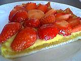
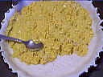
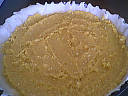
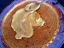
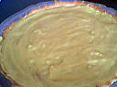
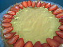
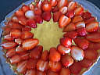
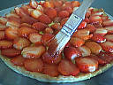
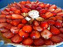

|
Tarte aux fraises Supertoinette |
|  |

Confectionner la pâte à tarte sablée, la crème d'amandes, la crème pâtissière.
Etaler votre crème d'amandes avec le dos de la cuillère. Enfourner pendant 30 minutes environ. Surveiller la cuisson ! |
|  |

Placer la tarte sur un plat de service. Laisser refroidir. Etaler sur la crème d'amandes, la crème pâtissière, égaliser.
|
|  |

Disposer les fraises, en les coupant en deux dans le sens dela hauteur, en commençant par les bords de la tarte. Continuer en spirale. |
|  |
Lustrer avec le nappage ou un sirop épais d'eau et de sucre les fraises à l'aide d'un pinceau. Décorer le centre avec une rose. |
Conseils de Supertoinette
Pour décorer à l'aide d'une poche à douille, faire des pointes de chantilly.
Cette tarte peut être faite avec aussi des fruits au sirop, des framboises etc.
Régalez-vous !... |
Dossier par http://www.supertoinette.com
Merci !
     
L O L |
 |